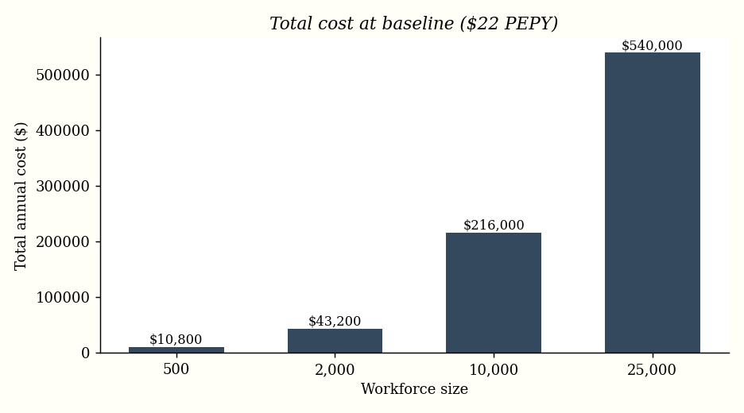
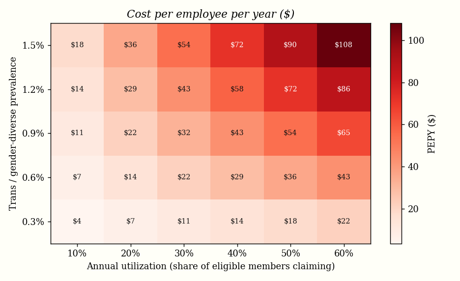

← Camille's Lot / Benefits Cost Model
Gender-Affirming Benefits Cost Model
What does it actually cost an employer to add comprehensive gender-affirming coverage?
The total-rewards question
Before an employer adds any benefit, someone in total rewards has to answer a deceptively simple question: what will this cost us? For gender-affirming care the public debate is loud, but the budgeting question is small and tractable. This model does what a benefits team does during benchmarking — turn a values question into a defensible number.Real-world reference points: Toyota Motor Manufacturing Canada added a $10,000 lifetime gender-affirmation benefit after a benchmarking analysis; the HRC's Corporate Equality Index notes that most employers adding transgender-inclusive coverage see "insignificant or no premium increases."
The model
The headline metric is PEPY — cost Per Employee Per Year — because that is the unit benefits teams and insurers actually negotiate on. Expected annual cost is:
annual cost = headcount x prevalence x annual_utilization x avg_annual_claim PEPY = prevalence x annual_utilization x avg_annual_claim
A useful property falls straight out of the algebra: PEPY does not depend on headcount. A 500-person nonprofit and a 25,000-person enterprise face the same per-employee cost; only the total scales. That is precisely why employers of very different sizes all report negligible premium impact.
Baseline assumptions (all adjustable)
| Input | Baseline | Rationale |
|---|---|---|
| Trans / gender-diverse prevalence | 0.6% | Share of workforce |
| Annual utilization | 30% | Of eligible members, share actively claiming in a given year |
| Avg. annual claim per active member | $12,000 | Blends mental health, hormone therapy, and amortized episodic surgical care |
Results
At baseline, comprehensive gender-affirming coverage costs $21.60 per employee per year — about 0.27% of a typical ~$8,000 PEPY benefits spend. In total-rewards terms, that is rounding error.
| Workforce | Expected annual users | Total annual cost | PEPY |
|---|---|---|---|
| 500 | ~0.9 | $10,800 | $21.60 |
| 2,000 | ~3.6 | $43,200 | $21.60 |
| 10,000 | ~18 | $216,000 | $21.60 |
| 25,000 | ~45 | $540,000 | $21.60 |

Sensitivity
Assumptions are uncertain, so the honest move is to show the whole surface rather than a single point estimate. Even at the pessimistic corner — high prevalence and high utilization — PEPY stays modest.

So what? (the recommendation a benefits analyst would write)
- The cost is negligible and predictable. Baseline ~$22 PEPY, and even tripling both prevalence and utilization keeps it a small fraction of total benefits spend.
- Frame it against alternatives. $21.60 PEPY is far less than the cost of a single avoidable regrettable departure — and a recognized lever for recruitment, retention, and CEI scoring.
- Show the surface, not a point. Leading with a sensitivity grid pre-empts the "but what if uptake is higher?" objection that sinks benefit proposals.
Reproduce it
cd papers/benefits-cost-model pip install numpy matplotlib python3 analysis.py # regenerates results.json and both charts
View the source → | Back to CV
Illustrative model built on transparent assumptions, not real claims data. Adjust the inputs at the top of analysis.py to fit a specific employer.